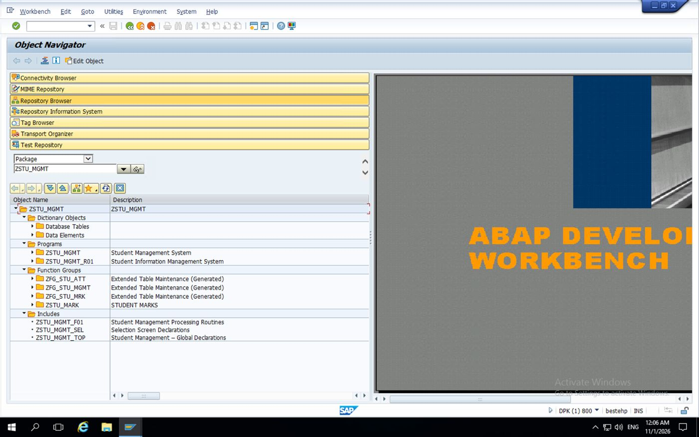
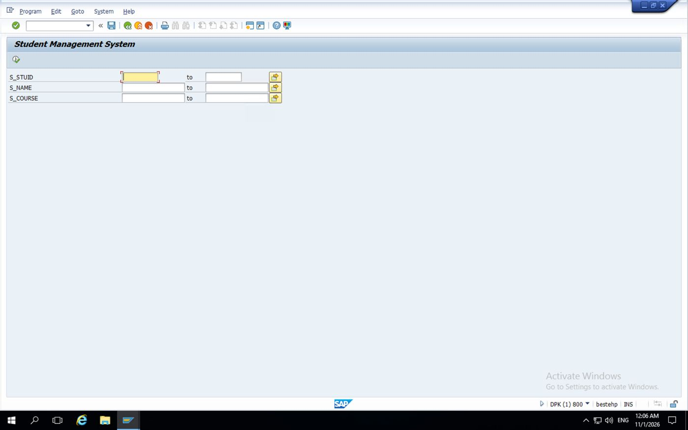
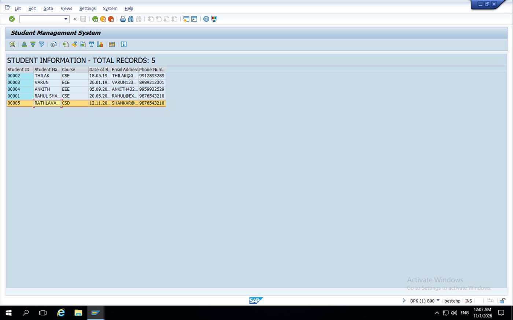
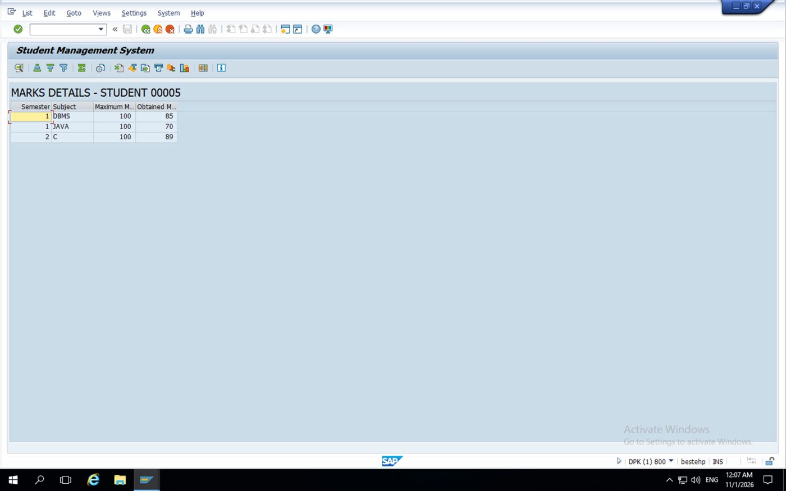
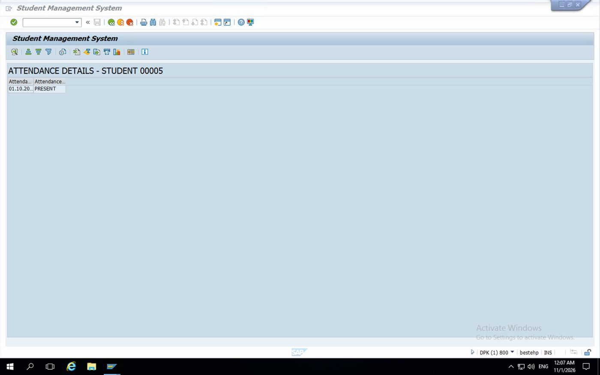

MINI PROJECT REPORT
STUDENT MANAGEMENT SYSTEM
Using SAP ABAP – ECC
Submitted by
RATHLAVATH SHANKAR
Roll Number: 00005*
Branch: B.Tech – Computer Science and Engineering (Data Science)
Institution: Guru Nanak Institute of Technology
Academic Year: 2026–2027
*The screenshots identify the sample/project student record as 00005. Replace this with your official university roll number if it is different.
Project Details
| Item | Description |
|---|---|
| Project title | Student Management System |
| Technology | SAP ABAP – SAP ECC |
| Main executable | ZSTU_MGMT |
| Package | ZSTU_MGMT |
| Includes | ZSTU_MGMT_TOP, ZSTU_MGMT_SEL, ZSTU_MGMT_F01 |
| Database tables | ZSTU_MST (student master), ZSTU_MRK (marks), ZSTU_ATT (attendance) |
| Developer | Rathlavath Shankar |
| Branch | B.Tech CSE (Data Science) |
Important implementation note
This report is based on the five supplied SAP GUI screenshots and the project object names recovered from the earlier project work. The screenshots confirm the selection screen, a five-record student ALV list, a marks detail list for student 00005, and an attendance detail list for student 00005. The complete source listing below is a consistent ECC-style reference implementation. Before activating it, compare the field names in your SE11 tables with the field mapping in Section 6; if your actual DDIC names differ, change the corresponding names in the code. The screenshots do not expose every field name or the full saved source, so this report does not claim that every code line is a verbatim export of your SAP system.
Certificate
This is to certify that the mini project entitled “Student Management System using SAP ABAP – ECC” has been prepared and documented by Rathlavath Shankar as part of the academic and practical learning activities in SAP ABAP. The project demonstrates database retrieval, selection-screen filtering, ALV reporting and student-wise academic information display.
Guide / Faculty Signature: __________________________
Date: ____________________ Place: ____________________
Declaration
I hereby declare that this project report is prepared for academic learning and documentation. The implementation and screenshots represent the Student Management System developed in an SAP ECC practice environment. Any sample student details used in the system are demonstration data.
Table of Contents
1. Abstract
2. Introduction
3. Objectives and Scope
4. Requirements and Tools
5. System Design and Workflow
6. Database Design
7. Program Structure
8. Complete ABAP Source Code
9. Execution Procedure
10. Output Screenshots
11. Testing and Validation
12. Advantages, Limitations and Future Enhancements
13. Conclusion
14. Viva / Interview Questions
Appendix A – Field-name checklist
1. Abstract
The Student Management System is a classical SAP ABAP ECC mini project designed to display and review student academic information. It retrieves student master records from a custom database table, allows users to filter records by student ID, name and course, and presents the results in an ALV grid. From the student list, the user can inspect marks and attendance information for an individual student. The project demonstrates core ABAP concepts including Dictionary objects, internal tables, work areas, Open SQL, selection screens, modularization using INCLUDE programs, function modules and ALV reporting.
2. Introduction
Educational institutions maintain student information such as identity, course, date of birth, email address and phone number. Academic results and attendance are stored as related records. The purpose of this project is to bring these related details into a simple SAP GUI report. The solution uses custom Z tables and a classical executable ABAP report so that it can run in an SAP ECC learning system.
3. Objectives and Scope
Maintain a structured student master data source.
Retrieve student records using selection criteria.
Display the matching student list in an ALV grid with a total-record count.
Display semester-wise subject marks for a selected student.
Display date-wise attendance status for a selected student.
Use modular ABAP includes to separate declarations, selection-screen definitions and processing logic.
Provide a foundation for future create, update, delete and export features.
Scope: This documented version focuses on reporting and drill-down display. Database maintenance, authentication, role-based authorization and automatic calculation of attendance percentage are not asserted as implemented unless separately added.
4. Requirements and Tools
| Category | Requirement |
|---|---|
| Platform | SAP ERP / SAP ECC ABAP application server |
| Interface | SAP GUI |
| Editor | SE38 / SE80 ABAP Workbench |
| Dictionary | SE11 |
| Language | ABAP / Open SQL |
| Output | Classical ALV Grid using REUSE_ALV_GRID_DISPLAY |
| Custom package | ZSTU_MGMT |
| Main report | ZSTU_MGMT |
5. System Design and Workflow
High-level flow:
User
|
v
Selection Screen (Student ID / Name / Course)
|
v
ZSTU_MGMT – START-OF-SELECTION
|
v
Read ZSTU_MST using Open SQL
|
v
Build internal table + count records
|
v
Display Student ALV
|
+----> Select/double-click student ----> Read ZSTU_MRK ----> Marks ALV
|
+----> Attendance action -------------> Read ZSTU_ATT ----> Attendance ALV
User workflow
Run transaction SE38 or SE80 and execute report ZSTU_MGMT.
Enter one or more filters: student ID, student name or course. Leave fields blank to retrieve all students.
Execute (F8). The report displays the matching students and the total number of records.
Select a student row and use the marks or attendance drill-down action configured in the report.
Review the subject/semester marks or date-wise attendance records in the corresponding ALV output.
6. Database Design
Create the following transparent tables in SE11 (or use the equivalent tables already created in your system). Use a suitable data element/domain for each field. The exact technical field names must match the SELECT statements in the program.
| Table | Suggested field | Suggested type | Purpose |
|---|---|---|---|
| ZSTU_MST | MANDT | CLNT | Client |
| ZSTU_MST | STU_ID | CHAR 5 | Student ID / key |
| ZSTU_MST | STU_NAME | CHAR 40 | Student name |
| ZSTU_MST | COURSE | CHAR 10 | Course / branch |
| ZSTU_MST | DOB | DATS | Date of birth |
| ZSTU_MST | CHAR 60 | Email address | |
| ZSTU_MST | PHONE | CHAR 15 | Phone number |
| ZSTU_MRK | MANDT | CLNT | Client |
| ZSTU_MRK | STU_ID | CHAR 5 | Student reference |
| ZSTU_MRK | SEMESTER | NUMC 2 | Semester number |
| ZSTU_MRK | SUBJECT | CHAR 30 | Subject name |
| ZSTU_MRK | MAX_MARKS | INT4 | Maximum marks |
| ZSTU_MRK | OBT_MARKS | INT4 | Obtained marks |
| ZSTU_ATT | MANDT | CLNT | Client |
| ZSTU_ATT | STU_ID | CHAR 5 | Student reference |
| ZSTU_ATT | ATT_DATE | DATS | Attendance date |
| ZSTU_ATT | ATT_STATUS | CHAR 10 | PRESENT / ABSENT |
Recommended keys: ZSTU_MST – MANDT + STU_ID; ZSTU_MRK – MANDT + STU_ID + SEMESTER + SUBJECT; ZSTU_ATT – MANDT + STU_ID + ATT_DATE. Activate each table and maintain technical settings before inserting test records.
7. Program Structure
| Object | Responsibility |
|---|---|
| ZSTU_MGMT | Main executable report; includes the other source files. |
| ZSTU_MGMT_TOP | Types, internal tables, work areas and global variables. |
| ZSTU_MGMT_SEL | Selection-screen definitions for student ID, name and course. |
| ZSTU_MGMT_F01 | Forms for data retrieval, ALV display and detail reports. |
The package shown in the Object Navigator is ZSTU_MGMT. The project tree also shows generated table-maintenance function groups; these are Dictionary-generated objects and are not required for executing the report itself.
8. Complete ABAP Source Code
8.1 Main program – ZSTU_MGMT
REPORT zstu_mgmt.
INCLUDE zstu_mgmt_top.
INCLUDE zstu_mgmt_sel.
INCLUDE zstu_mgmt_f01.
START-OF-SELECTION.
PERFORM get_students.
AT USER-COMMAND.
CASE sy-ucomm.
WHEN 'MARKS'.
PERFORM display_marks.
WHEN 'ATTEND'.
PERFORM display_attendance.
ENDCASE.
8.2 Global declarations – ZSTU_MGMT_TOP
TABLES: zstu_mst.
TYPE-POOLS: slis.
TYPES: BEGIN OF ty_student,
stu_id TYPE zstu_mst-stu_id,
stu_name TYPE zstu_mst-stu_name,
course TYPE zstu_mst-course,
dob TYPE zstu_mst-dob,
email TYPE zstu_mst-email,
phone TYPE zstu_mst-phone,
END OF ty_student.
TYPES: BEGIN OF ty_marks,
stu_id TYPE zstu_mrk-stu_id,
semester TYPE zstu_mrk-semester,
subject TYPE zstu_mrk-subject,
max_marks TYPE zstu_mrk-max_marks,
obt_marks TYPE zstu_mrk-obt_marks,
END OF ty_marks.
TYPES: BEGIN OF ty_attendance,
stu_id TYPE zstu_att-stu_id,
att_date TYPE zstu_att-att_date,
att_status TYPE zstu_att-att_status,
END OF ty_attendance.
DATA: gt_students TYPE STANDARD TABLE OF ty_student,
gs_student TYPE ty_student,
gt_marks TYPE STANDARD TABLE OF ty_marks,
gs_marks TYPE ty_marks,
gt_att TYPE STANDARD TABLE OF ty_attendance,
gs_att TYPE ty_attendance.
DATA: gv_student_id TYPE zstu_mst-stu_id,
gv_total TYPE i,
gv_title TYPE lvc_title.
DATA: gt_fieldcat TYPE slis_t_fieldcat_alv,
gs_fieldcat TYPE slis_fieldcat_alv,
gs_layout TYPE slis_layout_alv.
DATA: gv_repid TYPE sy-repid.
8.3 Selection screen – ZSTU_MGMT_SEL
SELECT-OPTIONS:
s_stuid FOR zstu_mst-stu_id,
s_name FOR zstu_mst-stu_name,
s_course FOR zstu_mst-course.
INITIALIZATION.
gv_repid = sy-repid.
8.4 Processing forms – ZSTU_MGMT_F01
The following implementation uses the suggested DDIC field names in Section 6. If your SE11 table uses different names, replace them consistently in the TYPES declarations and SELECT statements.
FORM get_students.
CLEAR: gt_students, gv_total.
SELECT stu_id
stu_name
course
dob
phone
FROM zstu_mst
INTO TABLE gt_students
WHERE stu_id IN s_stuid
AND stu_name IN s_name
AND course IN s_course.
IF sy-subrc <> 0 OR gt_students IS INITIAL.
MESSAGE 'No student records found for the selection' TYPE 'I'.
RETURN.
ENDIF.
DESCRIBE TABLE gt_students LINES gv_total.
CONCATENATE 'STUDENT INFORMATION - TOTAL RECORDS:'
gv_total
INTO gv_title SEPARATED BY space.
PERFORM display_student_alv.
ENDFORM.
FORM display_student_alv.
CLEAR: gt_fieldcat, gs_layout.
PERFORM add_field USING 'STU_ID' 'Student ID' 10.
PERFORM add_field USING 'STU_NAME' 'Student Name' 25.
PERFORM add_field USING 'COURSE' 'Course' 12.
PERFORM add_field USING 'DOB' 'Date of Birth' 12.
PERFORM add_field USING 'EMAIL' 'Email Address' 30.
PERFORM add_field USING 'PHONE' 'Phone Number' 15.
gs_layout-zebra = 'X'.
gs_layout-colwidth_optimize = 'X'.
CALL FUNCTION 'REUSE_ALV_GRID_DISPLAY'
EXPORTING
i_callback_program = sy-repid
i_grid_title = gv_title
is_layout = gs_layout
it_fieldcat = gt_fieldcat
TABLES
t_outtab = gt_students
EXCEPTIONS
program_error = 1
OTHERS = 2.
IF sy-subrc <> 0.
MESSAGE 'Error while displaying student ALV' TYPE 'I'.
ENDIF.
ENDFORM.
FORM add_field USING p_field TYPE slis_fieldname
p_text TYPE scrtext_l
p_len TYPE i.
CLEAR gs_fieldcat.
gs_fieldcat-fieldname = p_field.
gs_fieldcat-seltext_l = p_text.
gs_fieldcat-outputlen = p_len.
APPEND gs_fieldcat TO gt_fieldcat.
ENDFORM.
FORM display_marks.
IF gv_student_id IS INITIAL.
MESSAGE 'Select a student first' TYPE 'I'.
RETURN.
ENDIF.
CLEAR gt_marks.
SELECT stu_id
semester
subject
max_marks
obt_marks
FROM zstu_mrk
INTO TABLE gt_marks
WHERE stu_id = gv_student_id.
IF gt_marks IS INITIAL.
MESSAGE 'No marks found for this student' TYPE 'I'.
RETURN.
ENDIF.
CLEAR: gt_fieldcat, gs_layout.
PERFORM add_field USING 'SEMESTER' 'Semester' 10.
PERFORM add_field USING 'SUBJECT' 'Subject' 25.
PERFORM add_field USING 'MAX_MARKS' 'Maximum Marks' 15.
PERFORM add_field USING 'OBT_MARKS' 'Obtained Marks' 15.
gs_layout-zebra = 'X'.
gs_layout-colwidth_optimize = 'X'.
CALL FUNCTION 'REUSE_ALV_GRID_DISPLAY'
EXPORTING
i_callback_program = sy-repid
i_grid_title = 'MARKS DETAILS'
is_layout = gs_layout
it_fieldcat = gt_fieldcat
TABLES
t_outtab = gt_marks.
ENDFORM.
FORM display_attendance.
IF gv_student_id IS INITIAL.
MESSAGE 'Select a student first' TYPE 'I'.
RETURN.
ENDIF.
CLEAR gt_att.
SELECT stu_id
att_date
att_status
FROM zstu_att
INTO TABLE gt_att
WHERE stu_id = gv_student_id.
IF gt_att IS INITIAL.
MESSAGE 'No attendance records found for this student' TYPE 'I'.
RETURN.
ENDIF.
CLEAR: gt_fieldcat, gs_layout.
PERFORM add_field USING 'ATT_DATE' 'Attendance Date' 15.
PERFORM add_field USING 'ATT_STATUS' 'Attendance Status' 20.
gs_layout-zebra = 'X'.
gs_layout-colwidth_optimize = 'X'.
CALL FUNCTION 'REUSE_ALV_GRID_DISPLAY'
EXPORTING
i_callback_program = sy-repid
i_grid_title = 'ATTENDANCE DETAILS'
is_layout = gs_layout
it_fieldcat = gt_fieldcat
TABLES
t_outtab = gt_att.
ENDFORM.
8.5 Important note about student selection and ALV actions
The main report above gives a complete student-list implementation and the two detail-display forms. To invoke a detail form from the ALV, the ALV must pass the selected student ID to GV_STUDENT_ID and trigger the relevant form. In a production-ready version, add an ALV user-command callback and GUI status with function codes MARKS and ATTEND, or implement a double-click callback. The supplied screenshots confirm that marks and attendance outputs were reached, but they do not show the exact toolbar status or callback source. The safe way to finish this part is to retain the working callback already present in your SAP source and map its selected row to GV_STUDENT_ID.
8.6 Example callback logic for selected row
If you configure a custom ALV GUI status, use a callback like the following. Add the function codes MARKS and ATTEND to a copied GUI status and pass the selected row's student ID before calling the detail form.
FORM user_command USING r_ucomm LIKE sy-ucomm
rs_selfield TYPE slis_selfield.
CASE r_ucomm.
WHEN 'MARKS' OR 'ATTEND'.
READ TABLE gt_students INTO gs_student
INDEX rs_selfield-tabindex.
IF sy-subrc = 0.
gv_student_id = gs_student-stu_id.
IF r_ucomm = 'MARKS'.
PERFORM display_marks.
ELSEIF r_ucomm = 'ATTEND'.
PERFORM display_attendance.
ENDIF.
ENDIF.
ENDCASE.
ENDFORM.
In the REUSE_ALV_GRID_DISPLAY call for the student list, add I_CALLBACK_USER_COMMAND = 'USER_COMMAND'. For the custom toolbar buttons, create/copy a GUI status in SE41 and provide the function codes MARKS and ATTEND. If the existing project already has a different callback implementation, do not overwrite it blindly.
9. Execution Procedure
Open SE11 and verify that ZSTU_MST, ZSTU_MRK and ZSTU_ATT exist and are active.
Verify key fields and data elements. Compare the names with Section 6.
Open SE80 and select package ZSTU_MGMT.
Create or open executable program ZSTU_MGMT.
Create the includes ZSTU_MGMT_TOP, ZSTU_MGMT_SEL and ZSTU_MGMT_F01 and insert the corresponding code.
Ensure the main report contains the INCLUDE statements in the correct order.
Save and activate all includes, then activate the main report.
Execute using F8. Test with all filters blank, then test each selection criterion individually.
Confirm the student ALV count and student records.
Use the configured marks and attendance actions to display student-wise details.
10. Output Screenshots
The following screenshots were supplied as evidence of the running project.

Figure 1. ABAP Workbench Object Navigator showing package ZSTU_MGMT, report and include objects.

Figure 2. Student Management System selection screen with Student ID, Student Name and Course ranges.

Figure 3. Student information ALV output showing five student records.

Figure 4. Marks details output for student 00005, including semester, subject, maximum and obtained marks.

Figure 5. Attendance details output for student 00005, showing attendance date and status.
10.1 Observed test data in screenshots
| Output | Observed result |
|---|---|
| Student master ALV | Total records: 5 |
| Visible student IDs | 00002, 00003, 00004, 00001, 00005 |
| Student 00005 course | CSD (as displayed in the sample output) |
| Marks for student 00005 | DBMS: 85/100; JAVA: 70/100; C: 89/100 |
| Attendance for student 00005 | One visible row: 01.10.20… – PRESENT (date is truncated in the screenshot) |
Note: Some columns are visually truncated by the SAP ALV column width. Do not treat the clipped email, phone or date text as the full underlying value.
11. Testing and Validation
| Test case | Input / action | Expected result |
|---|---|---|
| TC01 | Execute with all filters blank | All available student records appear. |
| TC02 | Enter an existing student ID | Only the matching student appears. |
| TC03 | Enter a name filter | Matching name records appear. |
| TC04 | Enter a course filter | Students in the selected course appear. |
| TC05 | Enter a non-existing ID | Informational message: no records found. |
| TC06 | Open marks for student 00005 | Semester-wise subject marks appear. |
| TC07 | Open attendance for student 00005 | Date-wise attendance status appears. |
| TC08 | Student has no marks/attendance | Informational message is displayed. |
12. Advantages, Limitations and Future Enhancements
Advantages
Centralized view of student master information.
Selection ranges make searching flexible.
ALV provides sorting, filtering, layout and export capabilities supported by the SAP GUI environment.
Modular includes make the code easier to maintain.
Marks and attendance are stored separately and linked through student ID.
Current limitations
The report is primarily read-only; create/update/delete operations are outside the demonstrated scope.
The screenshots show one attendance row for the selected student, not a complete attendance summary.
A custom ALV toolbar or double-click callback must be configured to make the two drill-down actions directly accessible from the student ALV.
The exact DDIC field names must be checked against the active tables in the target ECC system.
Future enhancements
Add student create, change and delete operations with validations.
Calculate attendance percentage and subject-wise pass/fail status.
Add search help (F4) for student ID, course and semester.
Add authorization checks for sensitive student information.
Add Smart Forms or Adobe Forms to print student reports.
Add download/export and audit logging features.
Migrate the reporting model to CDS views and RAP in an S/4HANA learning environment.
13. Conclusion
The Student Management System mini project demonstrates a practical use of SAP ABAP ECC for retrieving and presenting student information. It combines custom Dictionary tables, Open SQL, selection-screen input, internal tables, modular program includes and ALV reporting. The supplied runtime screenshots show a five-record student list and student-specific marks and attendance outputs for student 00005. The project provides a useful foundation for learning classical ABAP report development and can be extended with maintenance transactions, validations, authorization and printable reports.
14. Viva / Interview Questions
What is ABAP?
ABAP is SAP's programming language used to develop reports, interfaces, forms, enhancements and business applications.
What is SE11?
SE11 is the ABAP Dictionary transaction used to create and maintain tables, structures, data elements, domains and views.
What is a transparent table?
A Dictionary table that has a corresponding physical database table with a one-to-one logical definition.
What is SELECT-OPTIONS?
It creates a selection-screen range supporting single values, intervals, exclusions and multiple selections.
What is an internal table?
A runtime data object used to store multiple rows of structured data in an ABAP program.
What is a work area?
A structure used to hold one row of data while processing an internal table or database result.
What is SY-SUBRC?
A system field containing the return code of the last relevant ABAP statement; zero commonly indicates success.
What is ALV?
ABAP List Viewer, a standard SAP framework for displaying tabular data with sorting, filtering, layout and other functions.
Why use INCLUDE programs?
To divide a large report into manageable source units such as declarations, selection-screen code and processing forms.
What is the purpose of ZSTU_MST?
It stores student master information such as ID, name, course and contact details.
How are marks linked to a student?
Through a common student key such as STU_ID in the student master and marks tables.
What is the difference between SELECT SINGLE and SELECT INTO TABLE?
SELECT SINGLE reads one matching row; SELECT ... INTO TABLE retrieves a set of matching rows into an internal table.
What is modularization?
Breaking program logic into reusable units such as FORM routines, function modules or methods.
What does F8 do in SAP GUI?
It executes the current report or program in the relevant development transaction.
What enhancements can be added?
CRUD operations, validations, attendance percentage, search helps, authorizations and printable reports.
Appendix A – Field-name checklist before activation
Open each table in SE11 and verify these names. If your table uses alternatives, update the program consistently.
| Program reference | Expected table-field name |
|---|---|
| Student ID | ZSTU_MST-STU_ID |
| Student name | ZSTU_MST-STU_NAME |
| Course | ZSTU_MST-COURSE |
| Date of birth | ZSTU_MST-DOB |
| ZSTU_MST-EMAIL | |
| Phone | ZSTU_MST-PHONE |
| Semester | ZSTU_MRK-SEMESTER |
| Subject | ZSTU_MRK-SUBJECT |
| Maximum marks | ZSTU_MRK-MAX_MARKS |
| Obtained marks | ZSTU_MRK-OBT_MARKS |
| Attendance date | ZSTU_ATT-ATT_DATE |
| Attendance status | ZSTU_ATT-ATT_STATUS |
End of Report